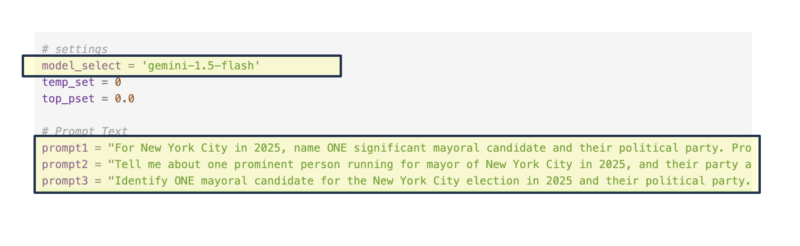
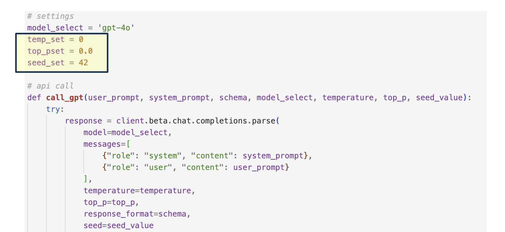
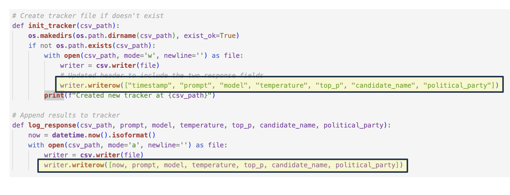
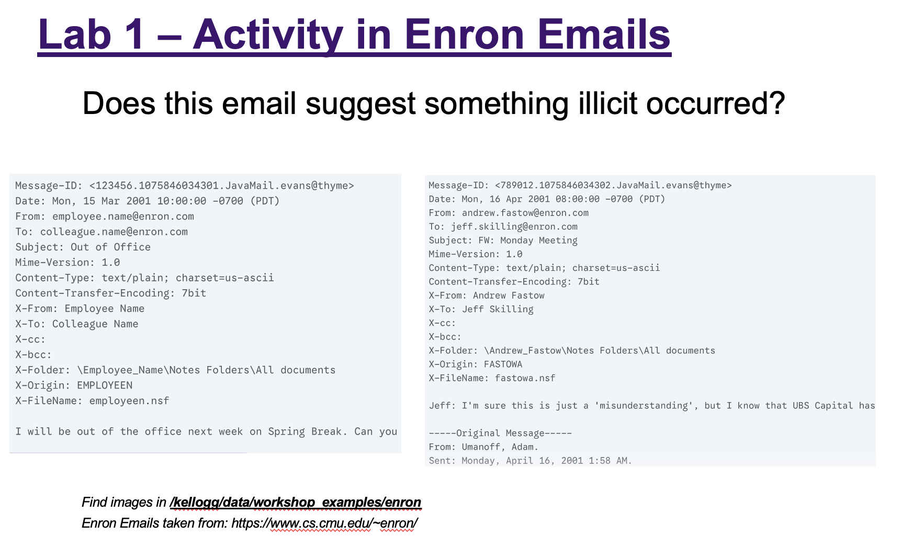
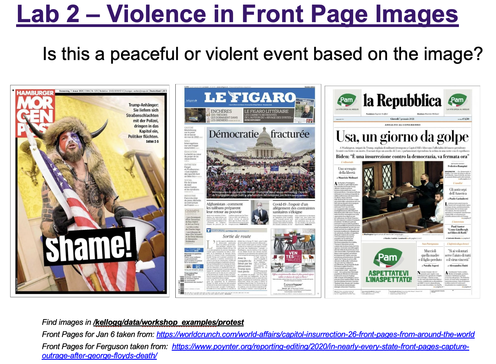

Reproducibility Advice#
Key Points#
Key Points
Prompt and Model Versioning
Set Parameters to Avoid Drift
temperature
top_p
set seed
Track / Log Results
progress tracker file
Sample Code#
Reproducibility Sample Code
Examples of the reproducibility tips will be found in the same code here.
Prompt, Model Versioning#
Prompt and Model Versioning - An Iterative Process

Sensitivity: LLMs are highly sensitive to prompt variations. Even minor changes in wording, formatting (e.g., spacing), or selecting a different model version can lead to significantly different outputs.
Experimentation: Systematically test and iterate on your prompts and model choices.
Reproducibility: Always version control your prompts and associated code using tools like Git or a log file.
Parameter Settings#
Setting Parameters to Avoid Drift

Control Parameters to Avoid Drift – Drift refers to unintentional changes in model outputs caused by small prompt edits, parameter changes, or updates to the underlying model.
temperature – Controls randomness in the model’s responses. Lower values (e.g., 0 or 0.1) make output more deterministic and repeatable.
→ Set with:temperature=0top_p (nucleus sampling) – Limits the probability mass from which tokens are sampled. A lower value narrows possible outputs while a higher considers all options.
→ Set with:top_p=0.0for more deterministic outputseed – Ensures repeatable outputs by fixing the model’s internal random choices. Not supported in Gemini (as of now), but available in OpenAI’s API.
→ Set with OpenAI using:seed=42(or any integer) inside the API call
Reproducibility – Version control parameter choices either by saving runs of your code in Git or preserving settings in a log file.
Log File#
Track All Fields with a Log File

Progress Tracker or Log File – Use logs not just for intermediate output, but to keep track of your full experimental context:
Parameter selections (e.g.,
temperature,top_p,seed)Model names and versions
Prompts, Responses, date/time of runs
KLC Tip: Logging makes it easy to seamlessly restart runs on KLC if your code is interrupted, without losing context.
Lab 2#
Lab 2 - Example

Lab 2 - Text Inputs
Use the sample code we provided as a starting point and write a script that iterates over these emails to identify any messages that indicate nefarious activities.
Test a few prompts and adjust your parameter settings
Save a log file of your results
CHALLENGE - Are there any additional steps you would take for reproducibility?
Lab 3#
Lab 3 - Example

Lab 3 - Image Inputs
Use the sample code we provided as a starting point and write a script that iterates over the images in either of these directories determining whether the image contains a violent action.
Test a few prompts and adjust your parameter settings
Save a log file of your results
CHALLENGE - Are there any additional steps you would take for reproducibility?